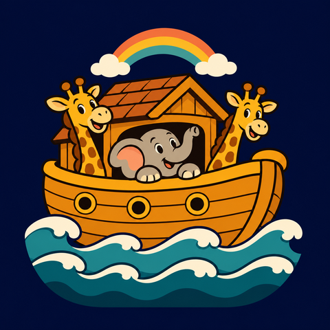

ARC Restore
Return to your previous Sound Out when a Bluetooth speaker disconnects.
Watcher
Checking- Current Sound Out
- —
- Previous output
- —
Checking Homebrew Channel…

Return to your previous Sound Out when a Bluetooth speaker disconnects.
Checking Homebrew Channel…